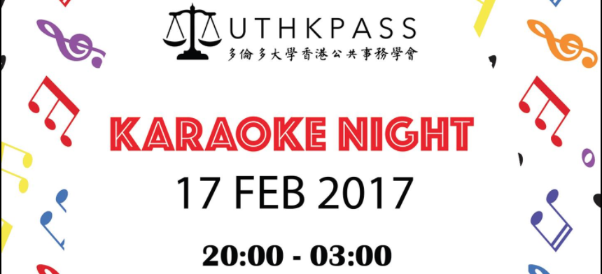
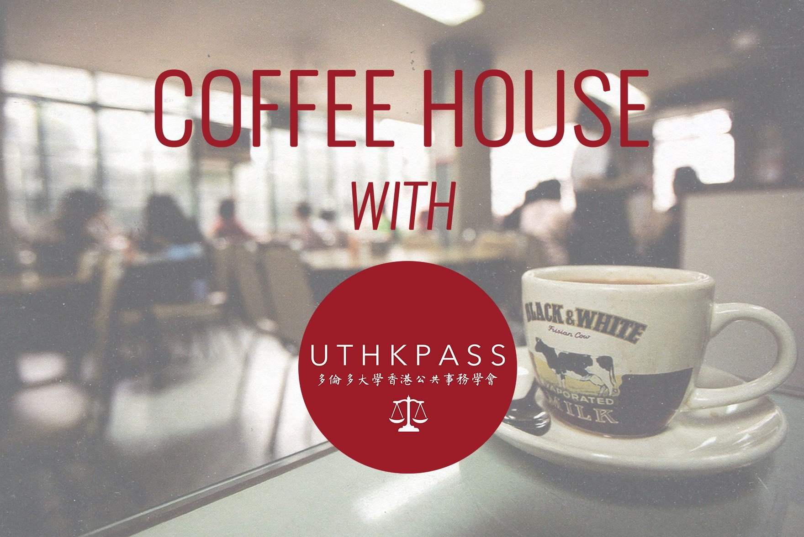

Our activities
Karaoke Night by UTHKPASS (17 Feb 2017)
Click here for more information - Facebook
Want to start off your reading week with a cheerful note? UTHKPASS is here to help you out! Join us on the evening of February 17 as we are hosting a karaoke social for all you talented singers! Bellow your heart out to classic tunes such as Beyond's "Boundless Oceans, Vast Skies" and enjoy the company of fun and frivolous students in one of Toronto's best Karaeoke establishment: 8090KTV! Tickets will be sold at our booth in Sidney Smith Hall during weekedays and at our upcoming milk tea social on Saturday, February 11 at OISE 3311. You can also contact one of our executives to reserve a spot. See you there!
Ticket price (members): 20 CAD
Ticket price (non-members): 25 CAD
HKPASS Free Milk Tea Social (Feb 11, 2017)
Click here for more information - Facebook
Thank you for joining our social event!
UTHKPASS (University of Toronto Hong Kong Public Affairs and Social Services Society) will be holding an introductory session. Come and learn about our our various committees and the events we'll be holding for this upcoming semester in room 3311 at OISE!
Passionate about social issues and current affairs in the 852, or would just like to mingle with Hong Kong-ers? Come out and grab some snacks with us!
踏入二月，嚴嚴寒冬，除左匿係圖書館裏面埋頭苦讀，仲有咩可以做? 多倫多大學香港公共事務學會(UTHKPASS)誠意邀請你出席本會創會後第一次活動簡介會。屆時UTHKPASS所有幹事將會向大家詳細介紹本年度的各項活動和發展方向。今年暑假仍然未有計劃的你，UTHKPASS將會於簡介會當日發佈有關即將開放報名的暑期義工服務團詳情。對於一直有意就香港事務發表意見的你，我們將會為大家講解UTHKPASS一系列的出版和辯論活動。想知更多? 約定你到時見！
"Self-determination and Rise of Youth Power" Seminar (Dec 5, 2016)

This event was co-organized by Canada-Hong Kong Link, CASSU, UTHKSA, UTHKPASS, and UTSCPS. Click here for photos.